Ostia Antica
June 17, 2023

On June 17, 2023 we spent a day at Ostia Antica during our Italy trip.
We walked the streets through the ruins, stopped at the floor mosaics and brick arches, and sat in the ancient theater.


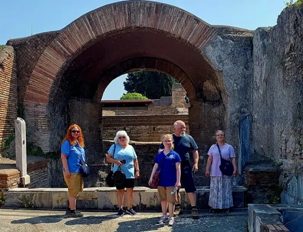

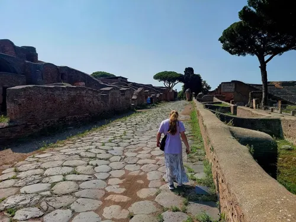

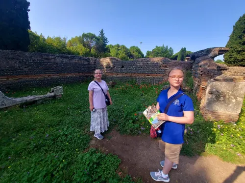

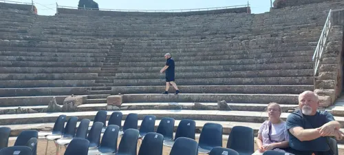

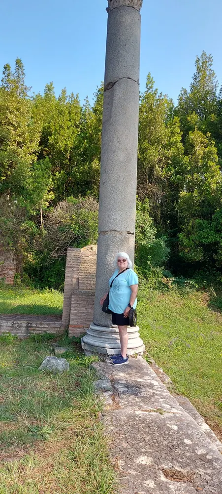

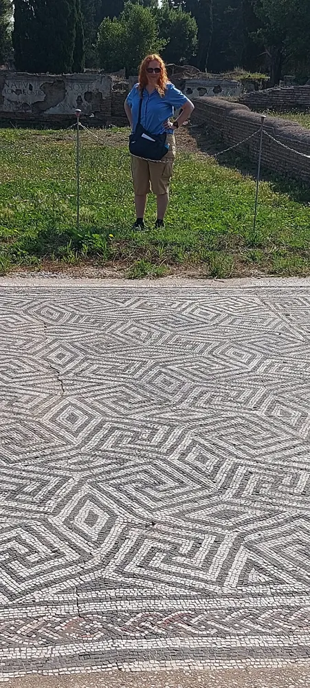

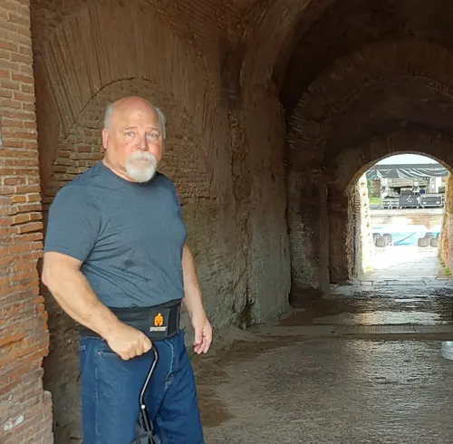

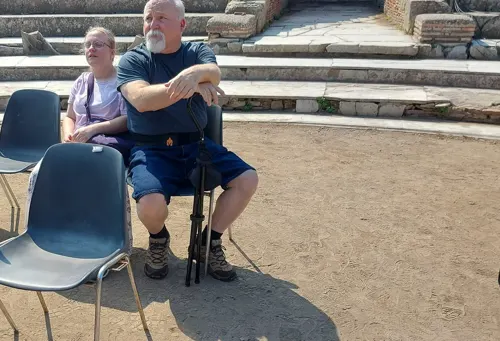

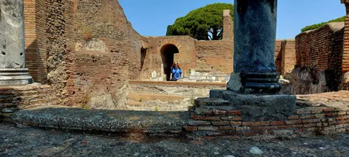

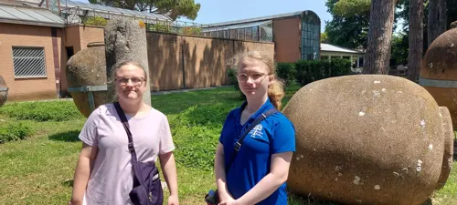

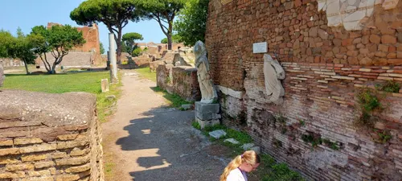

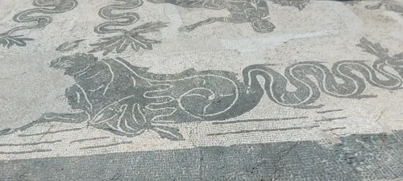